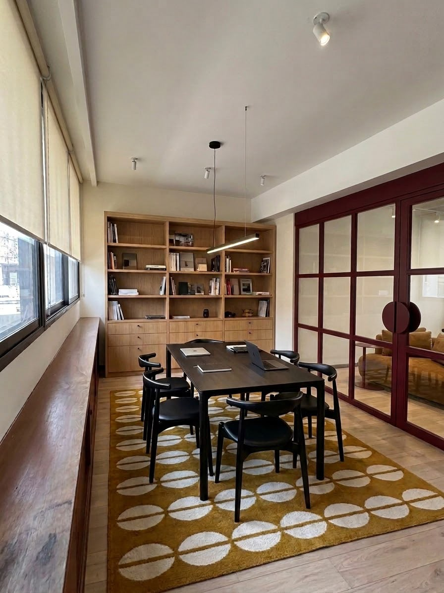
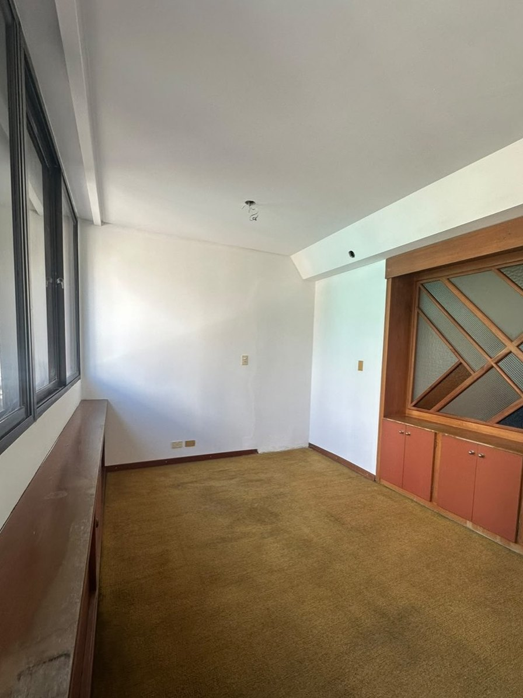

<title>Reforma de la oficina</title>
<meta name="claude:viewport-fit-sides" content="cover">
<link rel="preconnect" href="https://fonts.googleapis.com">
<link rel="preconnect" href="https://fonts.gstatic.com" crossorigin>
<link rel="stylesheet" href="https://fonts.googleapis.com/css2?family=Bricolage+Grotesque:opsz,wght@12..96,500;12..96,700&family=Instrument+Sans:wght@400;500;600&family=IBM+Plex+Mono:wght@400;500&display=swap">
<style>
/* Layout: photo comparison on the left (3:4 portrait), spec sheet of what changed on the right; stacks on phones. */
:root {
  --bg: #efeeeb;
  --surface: #f8f7f5;
  --ink: #1d1b1a;
  --muted: #6b6662;
  --line: #d8d4cf;
  --accent: #7b1e2c;      /* bordó de la divisoria vidriada */
  --oak: #b98a52;         /* roble de la biblioteca */
  --knob-bg: #ffffff;
  --knob-ink: #1d1b1a;
  --display: "Bricolage Grotesque", "Avenir Next", "Helvetica Neue", Arial, sans-serif;
  --body: "Instrument Sans", "Helvetica Neue", Arial, sans-serif;
  --mono: "IBM Plex Mono", ui-monospace, "SF Mono", Menlo, monospace;
}
@media (prefers-color-scheme: dark) {
  :root:not([data-theme="light"]) {
    --bg: #161515; --surface: #1f1d1c; --ink: #ece8e3; --muted: #a29b94; --line: #34302d;
    --accent: #d0606f; --oak: #d3a56c; --knob-bg: #ffffff; --knob-ink: #1d1b1a; color-scheme: dark;
  }
}
:root[data-theme="dark"] {
  --bg: #161515; --surface: #1f1d1c; --ink: #ece8e3; --muted: #a29b94; --line: #34302d;
  --accent: #d0606f; --oak: #d3a56c; --knob-bg: #ffffff; --knob-ink: #1d1b1a; color-scheme: dark;
}

* { box-sizing: border-box; }
body {
  background: var(--bg);
  color: var(--ink);
  font-family: var(--body);
  font-size: 15px;
  line-height: 1.55;
  -webkit-font-smoothing: antialiased;
}
.page {
  max-width: 1180px;
  margin: 0 auto;
  padding-block: clamp(20px, 4vw, 48px);
  padding-left: max(16px, env(safe-area-inset-left, 0px));
  padding-right: max(16px, env(safe-area-inset-right, 0px));
  display: grid;
  grid-template-columns: minmax(0, 1fr) minmax(0, 380px);
  gap: clamp(24px, 4vw, 56px);
  align-items: start;
}
@media (max-width: 860px) {
  .page { grid-template-columns: minmax(0, 1fr); }
}

/* ---------- Comparador ---------- */
.stage { display: grid; gap: 14px; justify-items: center; min-width: 0; }
.compare {
  position: relative;
  width: min(100%, calc(84vh * 0.7498));
  max-width: 100%;
  aspect-ratio: 896 / 1195;
  overflow: hidden;
  border-radius: 6px;
  background: var(--line);
  touch-action: pan-y;
  cursor: ew-resize;
  user-select: none;
  -webkit-user-select: none;
  --pos: 50%;
}
.compare img {
  position: absolute; inset: 0;
  width: 100%; height: 100%;
  object-fit: cover;
  pointer-events: none;
  -webkit-user-drag: none;
}
.compare .before { clip-path: inset(0 calc(100% - var(--pos)) 0 0); }
.compare.animating .before { transition: clip-path .7s cubic-bezier(.65,0,.35,1); }
.compare.animating .divider { transition: left .7s cubic-bezier(.65,0,.35,1); }

.divider {
  position: absolute; top: 0; bottom: 0;
  left: var(--pos);
  width: 0;
  pointer-events: none;
}
.divider::before {
  content: ""; position: absolute; top: 0; bottom: 0; left: -1px; width: 2px;
  background: #fff;
  box-shadow: 0 0 0 1px rgba(0,0,0,.12), 0 0 18px rgba(0,0,0,.25);
}
.knob {
  position: absolute; top: 50%; left: 0;
  width: 52px; height: 52px; margin: -26px 0 0 -26px;
  border-radius: 50%;
  background: var(--knob-bg);
  color: var(--knob-ink);
  display: grid; place-items: center;
  box-shadow: 0 6px 20px rgba(0,0,0,.28);
  transition: transform .15s ease;
}
.compare.dragging .knob { transform: scale(1.08); }
.knob svg { width: 26px; height: 26px; }

.tag {
  position: absolute; top: 14px;
  font-family: var(--mono);
  font-size: 11px; font-weight: 500;
  letter-spacing: .14em; text-transform: uppercase;
  padding: 6px 10px; border-radius: 3px;
  color: #fff;
  background: rgba(20,18,17,.62);
  backdrop-filter: blur(6px);
  -webkit-backdrop-filter: blur(6px);
  transition: opacity .25s ease;
  pointer-events: none;
}
.tag.left { left: 14px; }
.tag.right { right: 14px; background: rgba(123,30,44,.85); }

.range {
  position: absolute; inset: 0; width: 100%; height: 100%;
  opacity: 0; margin: 0; cursor: ew-resize;
  pointer-events: none;
}
.compare:has(.range:focus-visible) { outline: 3px solid var(--accent); outline-offset: 3px; }

.controls {
  display: flex; flex-wrap: wrap; gap: 8px; justify-content: center;
}
.controls button {
  font: 500 13px/1 var(--body);
  color: var(--ink);
  background: transparent;
  border: 1px solid var(--line);
  border-radius: 999px;
  padding: 10px 16px;
  cursor: pointer;
  transition: background .15s ease, border-color .15s ease, color .15s ease;
}
.controls button:hover { border-color: var(--muted); }
.controls button:focus-visible { outline: 2px solid var(--accent); outline-offset: 2px; }
.controls button[aria-pressed="true"] {
  background: var(--ink); color: var(--bg); border-color: var(--ink);
}
.hint { font-size: 13px; color: var(--muted); margin: 0; text-align: center; }

/* ---------- Ficha ---------- */
.sheet { display: grid; gap: 28px; min-width: 0; }
.eyebrow {
  font-family: var(--mono); font-size: 11px; letter-spacing: .16em; text-transform: uppercase;
  color: var(--muted); margin: 0 0 10px;
}
h1 {
  font-family: var(--display);
  font-weight: 700;
  font-size: clamp(34px, 4.6vw, 52px);
  line-height: 1.02;
  letter-spacing: -.02em;
  margin: 0;
  text-wrap: balance;
}
h1 em { font-style: normal; color: var(--accent); }
.lede { margin: 14px 0 0; color: var(--muted); max-width: 46ch; }

h2 {
  font-family: var(--mono); font-weight: 500; font-size: 11px;
  letter-spacing: .16em; text-transform: uppercase; color: var(--muted);
  margin: 0 0 4px;
}
.specs { list-style: none; margin: 0; padding: 0; border-top: 1px solid var(--line); }
.specs li {
  display: grid;
  grid-template-columns: 92px minmax(0, 1fr);
  gap: 4px 14px;
  padding: 13px 0;
  border-bottom: 1px solid var(--line);
}
.specs .k {
  font-family: var(--mono); font-size: 11px; letter-spacing: .08em; text-transform: uppercase;
  color: var(--muted); padding-top: 3px;
}
.specs .v { display: grid; gap: 2px; min-width: 0; }
.specs .was { color: var(--muted); font-size: 13.5px; text-decoration: line-through; text-decoration-color: color-mix(in srgb, var(--muted) 55%, transparent); }
.specs .now { font-weight: 500; }
.specs .now::before { content: "→ "; color: var(--accent); font-weight: 600; }

.kept {
  font-size: 13.5px; color: var(--muted); margin: 0;
  padding: 14px 16px; border-radius: 6px; background: var(--surface);
  border: 1px solid var(--line);
}
.kept strong { color: var(--ink); font-weight: 600; }
.swatches { display: flex; gap: 10px; flex-wrap: wrap; }
.sw { display: flex; align-items: center; gap: 8px; font-size: 12.5px; color: var(--muted); }
.sw i { width: 16px; height: 16px; border-radius: 50%; display: block; border: 1px solid rgba(0,0,0,.12); }

@media (prefers-reduced-motion: reduce) {
  .compare.animating .before, .compare.animating .divider, .knob, .tag, .controls button { transition: none; }
}
</style>

<main class="page">
  <section class="stage" aria-label="Comparador antes y después">
    <div class="compare" id="compare">
      
      
      <span class="tag left" id="tagBefore">Antes</span>
      <span class="tag right" id="tagAfter">Después</span>
      <div class="divider" aria-hidden="true">
        <div class="knob">
          <svg viewBox="0 0 24 24" fill="none" stroke="currentColor" stroke-width="2" stroke-linecap="round" stroke-linejoin="round"><path d="M9 6l-6 6 6 6"/><path d="M15 6l6 6-6 6"/></svg>
        </div>
      </div>
      <input class="range" id="range" type="range" min="0" max="100" step="0.5" value="50" aria-label="Deslizá para comparar antes y después" aria-valuetext="50% antes">
    </div>
    <div class="controls" role="group" aria-label="Vistas rápidas">
      <button type="button" id="btnBefore" data-pos="100" aria-pressed="false">Ver antes</button>
      <button type="button" id="btnHalf" data-pos="50" aria-pressed="true">Mitad y mitad</button>
      <button type="button" id="btnAfter" data-pos="0" aria-pressed="false">Ver después</button>
    </div>
    <p class="hint">Arrastrá la barra sobre la foto. También funciona con las flechas del teclado.</p>
  </section>

  <aside class="sheet">
    <header>
      <p class="eyebrow">Reforma interior · Oficina</p>
      <h1>De ambiente vacío a <em>sala de reuniones</em></h1>
      <p class="lede">El mismo ambiente, con la misma ventana corrida y la misma banquina de madera. Cambió todo lo demás.</p>
    </header>

    <div>
      <h2>Qué cambió</h2>
      <ul class="specs">
        <li><span class="k">Piso</span><span class="v"><span class="was">Alfombra mostaza gastada</span><span class="now">Piso de madera clara con alfombra de diseño</span></span></li>
        <li><span class="k">Lateral</span><span class="v"><span class="was">Mueble con vitral geométrico</span><span class="now">Divisoria vidriada con marco bordó</span></span></li>
        <li><span class="k">Fondo</span><span class="v"><span class="was">Pared blanca vacía</span><span class="now">Biblioteca de roble a medida con cajonera</span></span></li>
        <li><span class="k">Luz</span><span class="v"><span class="was">Boca de techo sin terminar</span><span class="now">Colgante lineal y spots dirigibles</span></span></li>
        <li><span class="k">Ventanas</span><span class="v"><span class="was">Sin cortinas</span><span class="now">Cortinas roller screen</span></span></li>
        <li><span class="k">Equipo</span><span class="v"><span class="was">Sin mobiliario</span><span class="now">Mesa de reunión para seis</span></span></li>
      </ul>
    </div>

    <p class="kept"><strong>Se conservó:</strong> la banquina de madera bajo la ventana y la carpintería de aluminio.</p>

    <div class="swatches" aria-label="Materiales principales">
      <span class="sw"><i style="background:#b98a52"></i>Roble</span>
      <span class="sw"><i style="background:#7b1e2c"></i>Bordó</span>
      <span class="sw"><i style="background:#b8902a"></i>Mostaza</span>
      <span class="sw"><i style="background:#2a2624"></i>Negro madera</span>
    </div>
  </aside>
</main>

<script>
(() => {
  const box = document.getElementById('compare');
  const range = document.getElementById('range');
  const tagB = document.getElementById('tagBefore');
  const tagA = document.getElementById('tagAfter');
  const buttons = [...document.querySelectorAll('.controls button')];
  const reduce = window.matchMedia('(prefers-reduced-motion: reduce)').matches;

  function set(p, animate) {
    p = Math.max(0, Math.min(100, p));
    box.classList.toggle('animating', !!animate);
    box.style.setProperty('--pos', p + '%');
    range.value = p;
    range.setAttribute('aria-valuetext', Math.round(p) + '% antes');
    tagB.style.opacity = p < 14 ? 0 : 1;
    tagA.style.opacity = p > 86 ? 0 : 1;
    buttons.forEach(b => b.setAttribute('aria-pressed', String(Number(b.dataset.pos) === Math.round(p))));
  }

  function fromEvent(e) {
    const r = box.getBoundingClientRect();
    return ((e.clientX - r.left) / r.width) * 100;
  }

  let dragging = false;
  box.addEventListener('pointerdown', e => {
    dragging = true;
    box.classList.add('dragging');
    box.setPointerCapture(e.pointerId);
    set(fromEvent(e), false);
    range.focus({ preventScroll: true });
  });
  box.addEventListener('pointermove', e => { if (dragging) set(fromEvent(e), false); });
  const end = () => { dragging = false; box.classList.remove('dragging'); };
  box.addEventListener('pointerup', end);
  box.addEventListener('pointercancel', end);

  range.addEventListener('input', () => set(Number(range.value), false));
  buttons.forEach(b => b.addEventListener('click', () => set(Number(b.dataset.pos), !reduce)));

  set(50, false);

  // Pista inicial: un vaivén corto para mostrar que la barra se mueve.
  if (!reduce) {
    setTimeout(() => { if (!dragging) set(64, true); }, 700);
    setTimeout(() => { if (!dragging) set(50, true); }, 1500);
  }
})();
</script>
